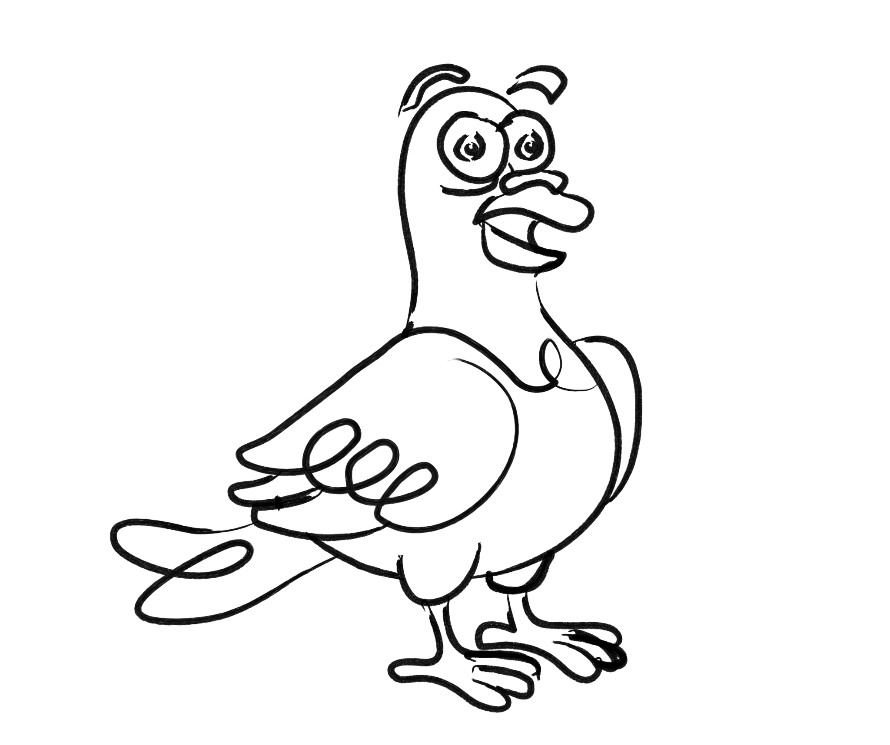

About Me
Hey, my name is Nick Leake. I’m a designer who digs drawing and riding bikes. I live in Baltimore and work at the U.S. Treasury, helping them build better tools and websites. Previously, I taught UX to grad students at MICA, designed publishing software for USA Today, and improved refugee application processes at USCIS.
Outside of making government forms less frustrating, I also design for small businesses. I’ve done creative work for all sorts: nonprofits, old coworkers, even the local tattoo shop. If you’ve got a bold idea, I can help you bring it to life. Email me or let's connect on social media via the links below.
Services: Strategy / Branding / Illustration / Type Design / Product Design / Front-End Development / + More

What People Say
Nick is a fantastic professional and was integral to the success of our UX / UI buildout. He is thoughtful, intelligent, and experienced.
Amazing! Not your ordinary UI/UX professional. With a project management background he is able to work with businesses to strategically implement designs with the whole picture in mind.
Nick was a key member of our team and helped transition us from a waterfall approach into one of the leading agile teams at Gannett. He showed excellent leadership skills by introducing a backlog refinement session into our process which was an immense help to organizing the workload and priorities. Nick's knowledge and humility made him a pleasure to work with.